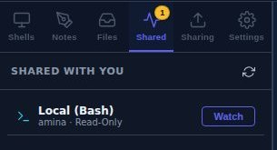
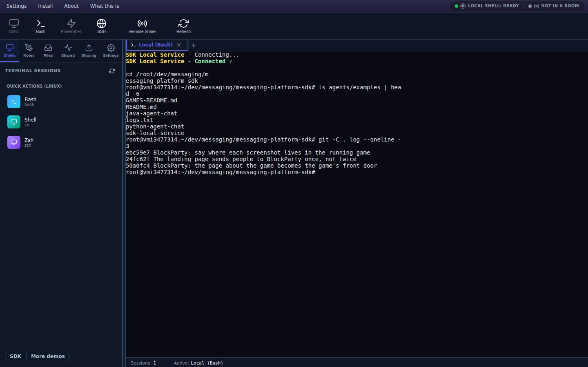
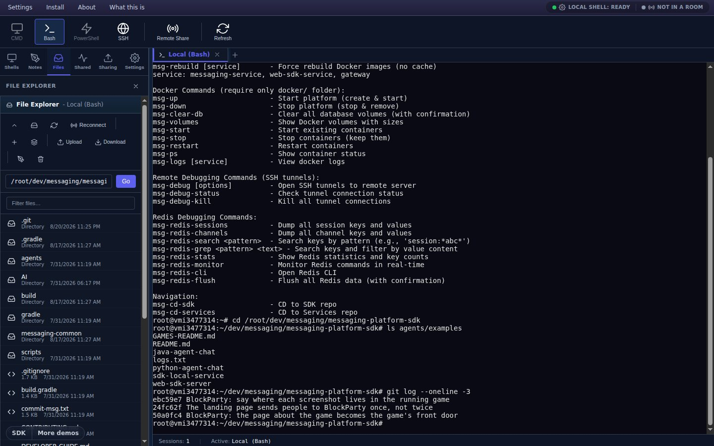

An invitation, not a tab that appears
Somebody sharing a session in your room does not open a terminal on your screen. It lands in Shared with You with the owner's name and its permission on it, and you press Watch if you want it.
A real terminal in a browser tab — bash, cmd, PowerShell, or an SSH host you keep in an address book — with a file explorer and an editor beside it. Then hand one tab to somebody in a room: they watch it live, read-only, and they only get the keyboard if you say so. That permission is checked on your machine, not theirs.
Read-only by default Per-tab, per-person Revocable in one click

In the app: toolbar → Bash (or CMD / PowerShell — the ones your machine does not have are greyed out).
There is no shell on our servers, and this page does not have one either. It talks to a small helper you run on your own machine — the SDK Local Service — which spawns the real process and streams it back. That is the honest shape of it, and it is why the terminal can open your files and your SSH hosts without anything of yours leaving your computer except what you deliberately share.
Without the helper you can still watch. Joining a room somebody has shared a session into needs nothing installed at all — the terminal appears in your browser and you read it. What the helper unlocks is your own shells, your own files, and being the person who shares.
A viewer's keystrokes travel to you and are checked there before they reach the shell — first against that person's own permission, then against the session's. Anything that is not read-write is dropped. The gate is on the side that owns the process, which is the only side where a gate means anything.

Somebody sharing a session in your room does not open a terminal on your screen. It lands in Shared with You with the owner's name and its permission on it, and you press Watch if you want it.
A read-only viewer right-clicks their tab and chooses Request Write Access. The owner gets the request with the person's name on it and answers yes or no; every badge in the room updates when they do.
Type into a session you may only watch and the terminal tells you why, once, with the way to ask — rather than silently swallowing what you typed.
The Sharing tab lists every share and everyone connected to it. Right-click one of them and set that person read-only or read-write on their own — one pair may drive while the rest of the room watches.
File operations from viewers are checked the same way, against an explicit list of what counts as reading and what counts as writing, and a blocked attempt tells the owner it happened.
For pasting into a chat, or pointing a phone at. Opening it asks the new arrival for a display name once and then puts them in the room.
Because half the time somebody is asking for help on a call. The code is minted on the server with an expiry and a number of people it will let in — "good for ten minutes, and for two people" — and it is the first field the joiner sees, not the last.
Once you are in a room it appears in the top bar and goes straight to the sharing panel with the link and the QR already made.

In the app: open a shell, then the sidebar's Files tab.
A file explorer per session — the local disk for a local shell, SFTP for an SSH tab, and for a viewer with write access, the owner's disk proxied through the same room. Drag files in to upload; download comes back in 64 KB chunks with a progress bar you can cancel.
Everything not listed here goes to the shell, where it belongs — Ctrl+C interrupts your program, it does not copy.
What it does not do. There is no search across the scrollback, no light theme, and no dragging tabs into a new order. Somebody joining a live share sees the session from that moment on — what scrolled past before they arrived is not replayed. And read access is room membership: anyone in the room you shared into can watch, so treat the room password as the thing that matters.
Open it, start the helper, and share a tab with somebody who is trying to help you. Free while the SDK is in beta.
Open the terminal